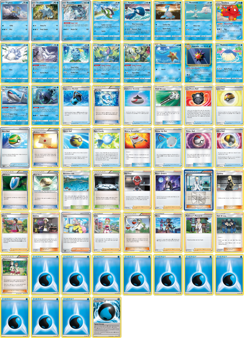

Deck Lists
Grass Deck
Rillaboom/Venusaur

The insane thing about Grass is that there is a synergy between power and
consistency within its evolution lines. Over half of your basics have Pokemon
seaching attacks and once you get Grotle online, the whole deck can set itself up.
Roserade jives really well with the Grotle engine, making it so that you can turn
your Pokémon search into anything-search by utilizing Roserade's Le Parfum
Ability. Since you used your basic Pokemon's attacks to get set up, they are
now powered up and can take big OHKOs with Torterra and Zarude.
Fire Deck
Charizard/Heatmor
With all the best Fire support Pokémon packed into one deck, you're sure to
get set up at a blazing speed! Once Charizard hits the field, its Burn Brightly
ability will double the effectiveness of all your energy. Salazzle, and Magcargo
support the deck by searching out and drawing you cards turn after turn. Accelerate
energy with Welder and Blacksmith to power up Heatmor's huge Exciting Flames
with ease!
Water Deck
Rain Dance

This deck aims to power up Water's biggest attackers as fast and consistently
as possible with Frosmoth or Baxcalibur. In my mind, this is the “quintessential”
Water deck, and one of my favorite decks to pilot in Gym Leader Challenge.
Lightning Deck
Special Energy
This list embodies all the most powerful qualities of Lightning Pokémon in Gym
Leader Challenge. Quick aggro with Tapu Koko and Zapdos combined with the mid-late
game potential of Amazing Rare Raikou and Regieleki make this deck a monster to
deal with on the battle field.
Psychic Deck
Dragapult
There are many different routes to take when building a Psychic type Gym Leader
Challenge deck. Selecting which direction to take can be tough! For an archetype
that has so much spread and bench damage at its disposal, it has a surprising
amount of hard-hitters, too. Gallade is a perfect consistency card, allowing you to
search out any supporter you want every turn. Malamar allows you to power up Giratina
and Necrozma with ease. Once Dragapult is set up, it can wreak havoc on your opponent
with its Infiltrator Ability and awesome Phantom Force attack.